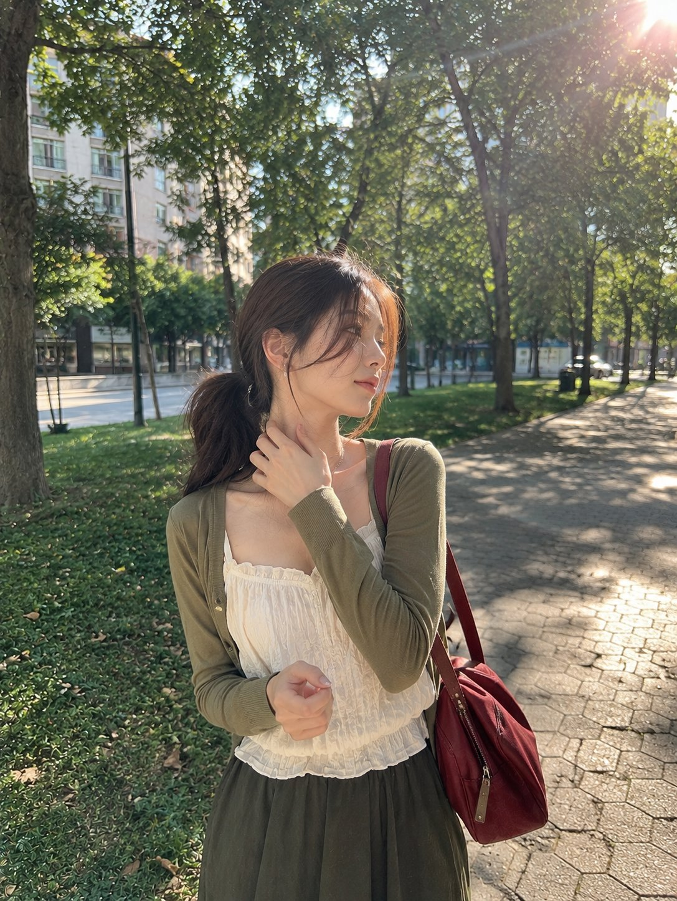
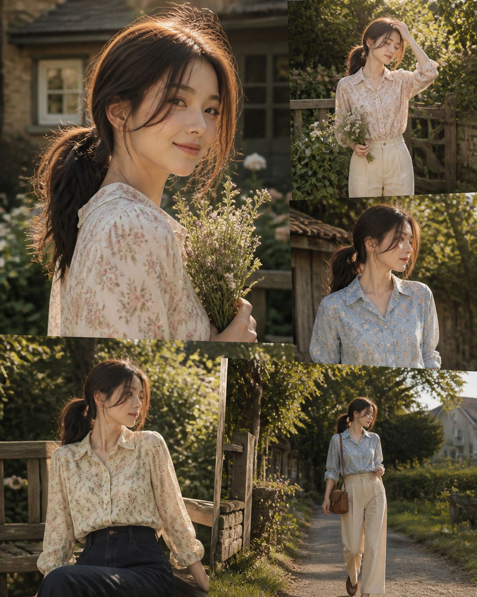

REF-A · P0 · 实际500px／390px回归已生成并保存
乡村胶片人像拼图
独立人像输入 → 同一人物的五张重叠照片，保持4:5输出。
案例位置：countryside-film-collage-2a70f109

candid-park-portrait-c0cdb8a7实际控件参数
- 模型／提供方
- GPT Image 2 / AtlasCloud
- 生成方式／参考输入数
- reference / 1张
- ratio
- 4:5
- resolution／请求尺寸
- 1K / 1024×1280
- quality／接口值
- 低 / 1k
- count／提交次数
- 1张 / 1次
- 实际站点扣款
- 2积分
- 计算
- 2 × 1 × 1 × 1 × 1
原文“8K quality”是风格描述，本次实际请求仍为1K／1024×1280。

预期结果，不是实测结论
- 返回1张原始输出，实际尺寸1024×1280；不靠后期裁切或缩放满足比例。
- 五格保持同一人物身份，包含花束、站立、半身、坐姿与行走，手部合理，无文字或水印。
- 真实余额减少2积分，下载、刷新和复用不产生额外扣款。
- 历史保留reference、4:5、1K、低画质、1张及实际提交提示词。